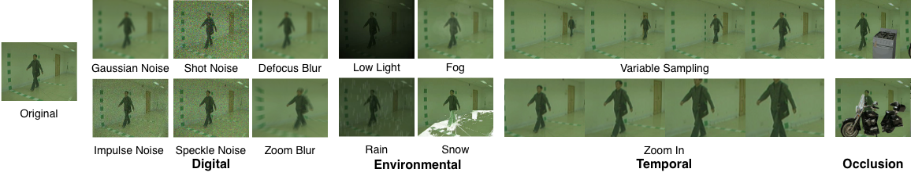
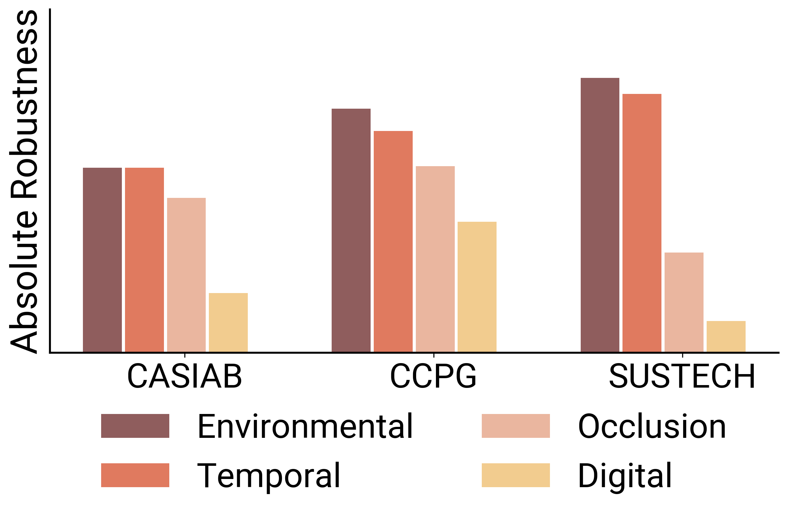
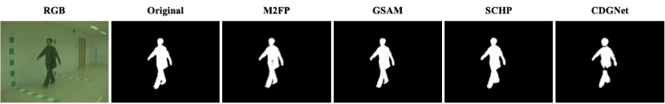
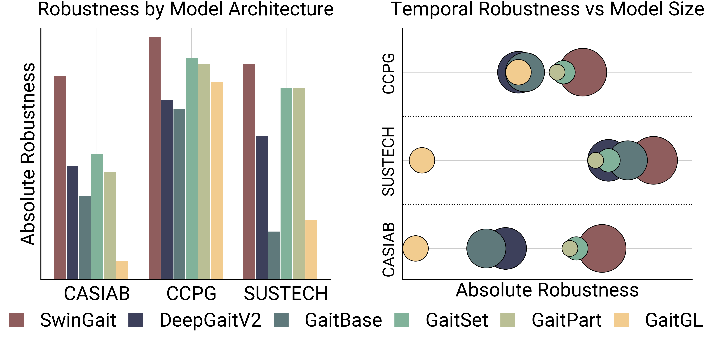
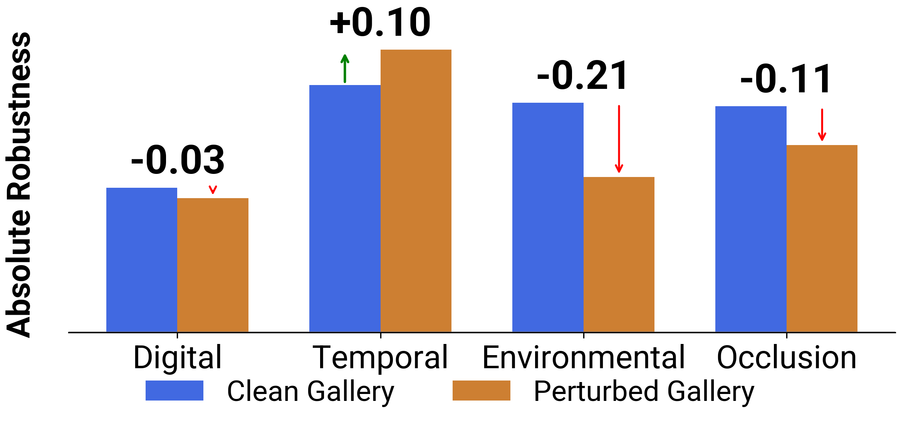
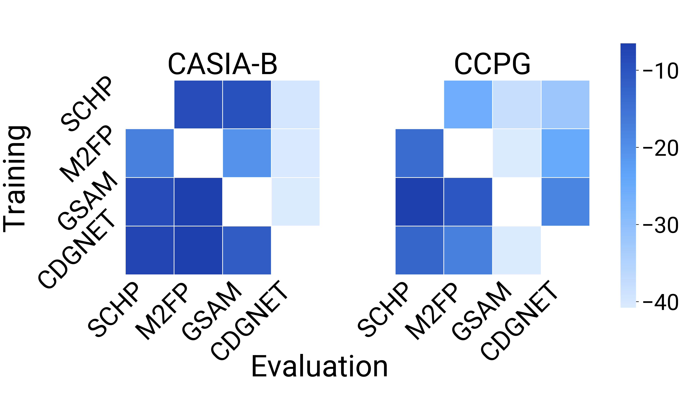
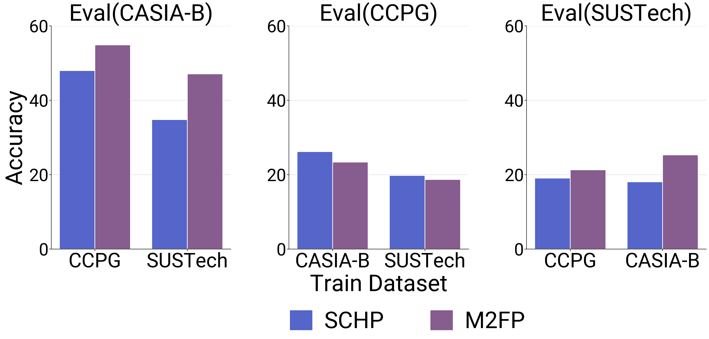

Appearance-based gait recognition have achieved strong performance on controlled datasets, yet systematic evaluation of its robustness to real-world corruptions and silhouette variability remains lacking. We present RobustGait, a framework for fine-grained robustness evaluation of appearance-based gait recognition systems.
RobustGait evaluation spans four dimensions: the type of perturbation (digital, environmental, temporal, occlusion), the silhouette extraction method (segmentation and parsing networks), the architectural capacities of gait recognition models, and various deployment scenarios. The benchmark introduces 15 corruption types at 5 severity levels across CASIA-B, CCPG, and SUSTech1K, with in-the-wild validation on MEVID, and evaluates six state-of-the-art gait systems.
We find: (1) applying noise at the RGB level better reflects real-world degradation and reveals how distortions propagate through silhouette extraction, (2) gait accuracy is highly sensitive to silhouette extractor biases, (3) robustness depends on both perturbation type and model architecture, and (4) noise-aware training and knowledge distillation improve deployment readiness.
RobustGait evaluates degradations across digital, environmental, temporal, and occlusion noise. Digital noise and occlusions cause the strongest drops by distorting or removing body structure critical for silhouette extraction. Environmental and temporal noise tend to preserve shape, leading to more moderate degradation.


Different silhouette extractors can drastically change silhouette quality, causing unfair comparisons across datasets. Higher segmentation IoU (mask quality) corresponds to higher Rank-1 recognition accuracy across gait models.


Robustness varies by architecture: transformers often show stronger overall robustness, while CNNs degrade more under local corruptions; smaller set-based models are more robust to temporal noise compared to larger CNN models. .

Scenario 1: Both probe and gallery are noisy
When both the probe and the gallery contain noise, recognition performance drops significantly. Models trained only on clean data tend to rely on clean silhouette features, so when noise appears in both sets, matching becomes unstable. A clean gallery can partially stabilize recognition, but when noise affects both sides, errors compound and accuracy degrades.

Scenario 2: Cross-extractor evaluation
Gait models are highly sensitive to the silhouette extraction pipeline. If a model is trained using silhouettes from one extractor but evaluated using another, performance drops noticeably. This mismatch reveals hidden evaluation bias and shows that recognition accuracy depends not only on the gait model, but also on how silhouettes are generated.

Scenario 3: Cross-dataset transfer
Even when using the same silhouette extractor, performance changes across datasets due to differences in environment, camera setup, and data characteristics. An extractor or model that performs best on one dataset may not generalize to another, highlighting the importance of evaluating robustness across domains.

@inproceedings{sayera2026robustgait,
title = {RobustGait: Robustness Analysis for Appearance-Based Gait Recognition},
author = {Sayera, Reeshoon and Kumar, Akash and Mitra, Sirshapan and Kamtam, Prudvi and Rawat, Yogesh S.},
booktitle = {Winter Conference on Applications of Computer Vision (WACV)},
year = {2026},
url = {https://arxiv.org/abs/2511.13065}
}